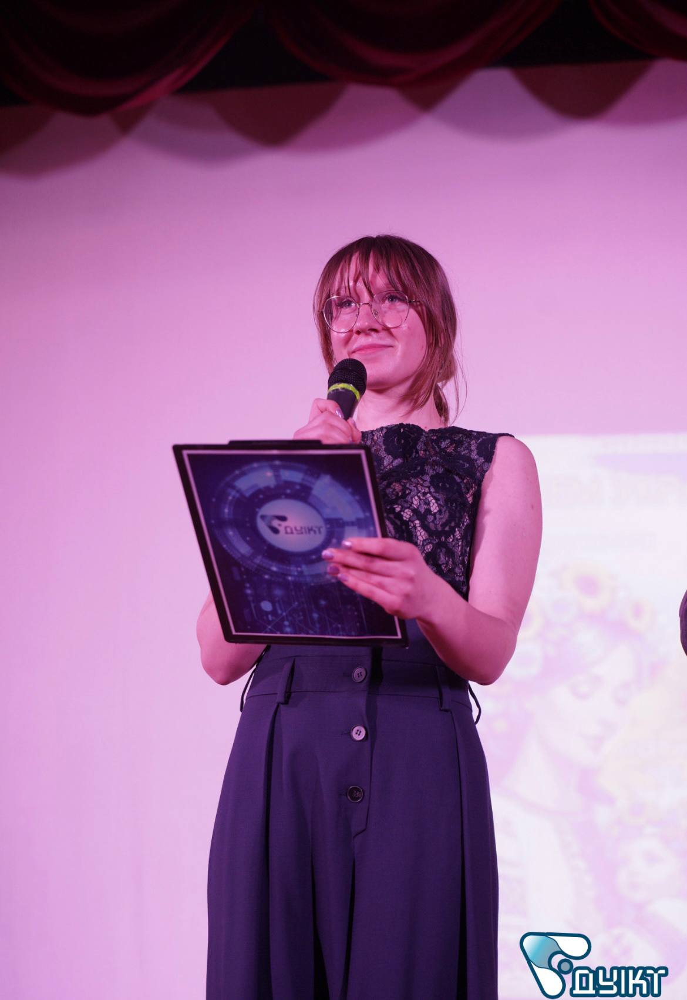

Про мене

Я студентка Державного університету інформаційно-комунікаційних технологій, вивчаю веб-технології та розробку програмного забезпечення.
Роки навчання: 2023–2027
Контактні дані: st8430982@stud.duikt.edu.ua
GitHub репозиторій: Valeriia-Savluk